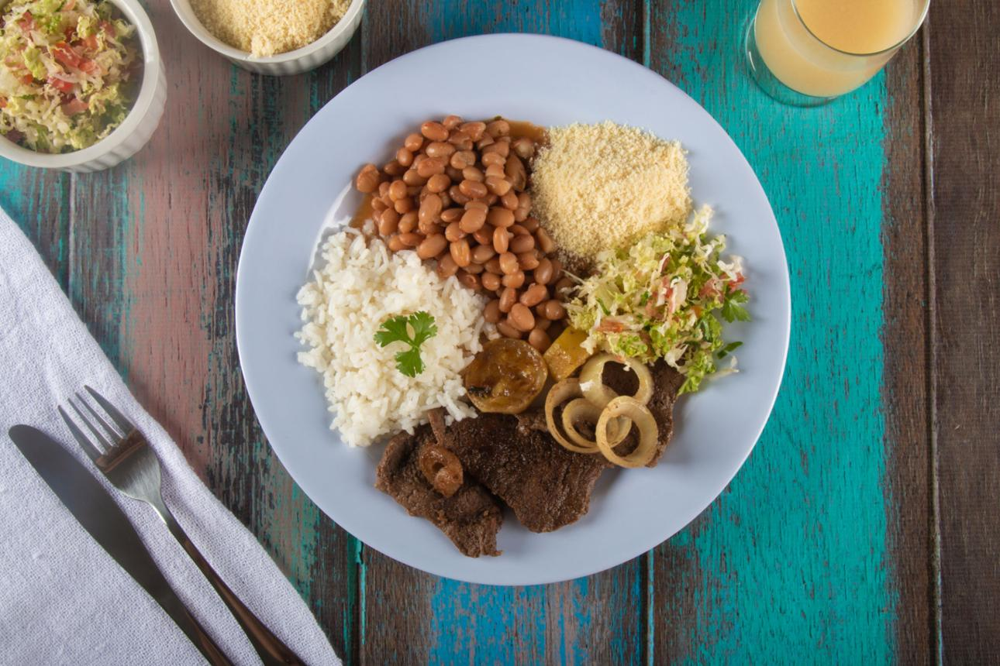
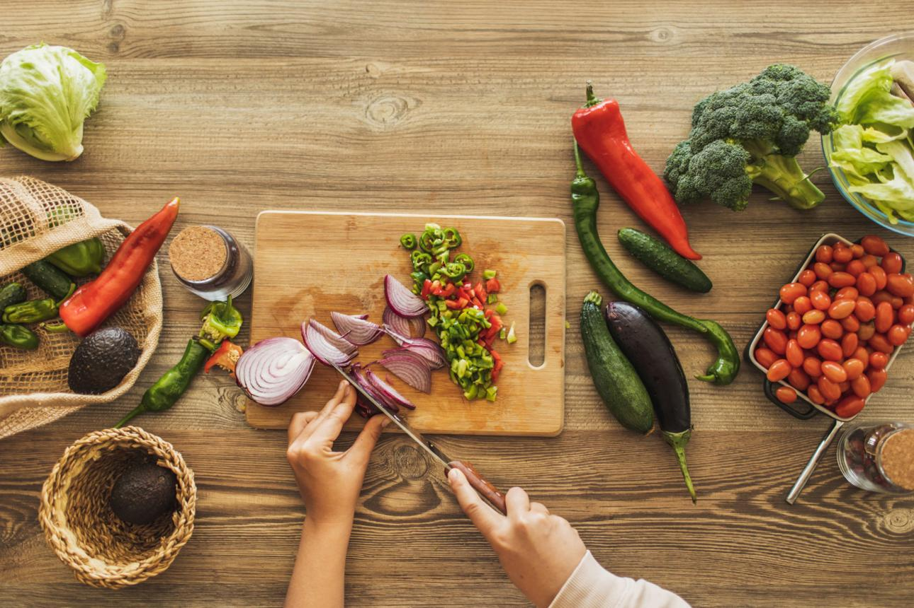
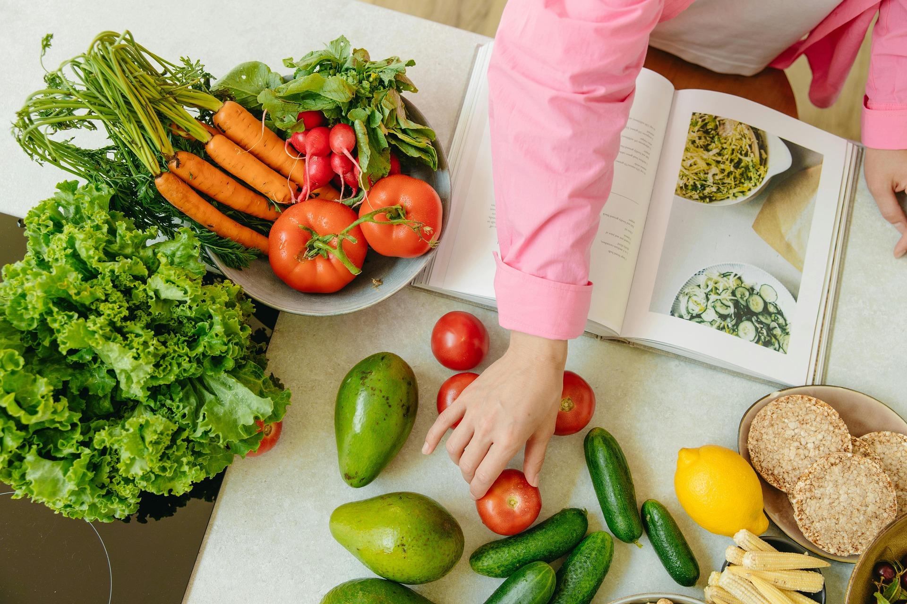

Receitas
Preparos simples, com poucos ingredientes e passo a passo claro, para o dia a dia.
Ver receitasO Básico Bem Feito é um blog de cozinha prática para quem quer aprender o essencial com confiança. Aqui você encontra receitas simples, técnicas explicadas passo a passo e guias dos ingredientes mais usados no dia a dia.
Cada seção tem uma função: as receitas mostram o que preparar, as técnicas ensinam como fazer e os ingredientes ajudam a escolher e conservar o que vai à panela. Use o menu ou os destaques abaixo para começar.

Preparos simples, com poucos ingredientes e passo a passo claro, para o dia a dia.
Ver receitas
Cortes, pontos de cozimento e métodos básicos para você ganhar segurança na cozinha.
Ver técnicas
Um guia dos ingredientes mais usados: como escolher, guardar e aproveitar bem cada um.
Ver ingredientes